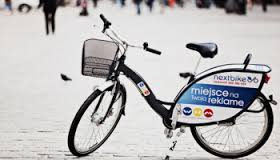

Jak zacząć


Aby zacząć wystarczy się zarejestrować i przy stacji
wpisać indywidualny kod, który pozwili na wypożyczenie roweru.
-
Stacje działające:
- Grabiszyńska
- Cmentarz
- Plac Grunwaldzki
- Jeszcze inna
-
Stacje planowane:
- Hotel Wrocław
- Hallera
- Kolejna stacja